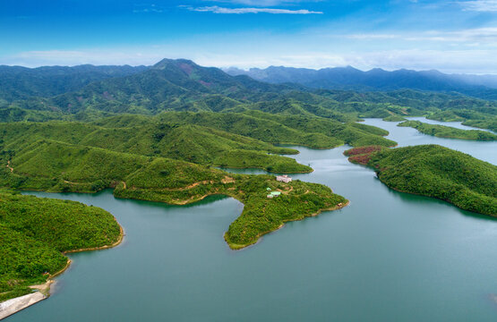
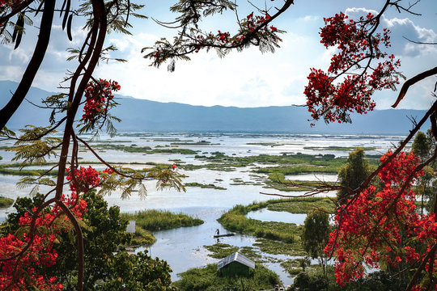
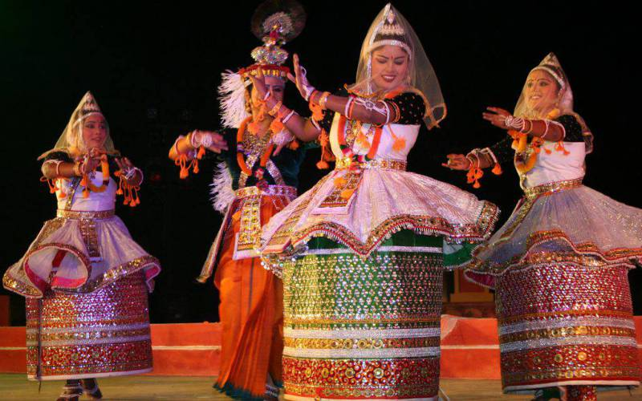
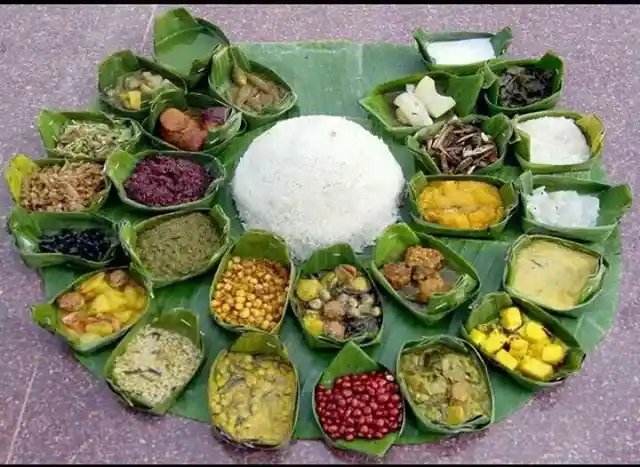

| ✧ Aspect | Information |
|---|---|
| ✧ Capital | Imphal |
| ✧ Chief Minister | Okram Ibobi Singh |
| ✧ Largest City | Imphal |
| ✧ Districts | 16 |
| ✧ Official Language | Manipuri (Meiteilon) |
| ✧ Other Language | Naga, Tangkhul, Poula, Rongmei and Mao. |
| ✧ Population | Approximately 3 million |
| ✧ Area | 22,327 square kilometers |
| ✧ Major Rivers | Imphal, Barak, Manipur |
| ✧ Major Industries | Handloom and Handicrafts, Tourism, Agriculture |
| ✧ Popular Places | Loktak Lake, Kangla Fort, Shree Govindajee Temple, Khongjom War Memorial |
The traditional Dresses of Manipur includes Phanek (a wraparound cloth), Innaphi (a shawl), and a blouse for women, and for men, it includes a dhoti or a kurta with a jacket. These traditional dresses represent the rich cultural heritage of Manipur.
Manipur, situated in northeastern India, boasts a history that dates back to ancient times. The region has been inhabited by various ethnic groups, each contributing to its cultural diversity.
The early history of Manipur is characterized by the rule of several indigenous tribes, including the Meitei people. Manipur witnessed the emergence of powerful kingdoms like the Kangleipak Kingdom, which played a significant role in shaping the socio-political landscape of the region.
Over the centuries, Manipur experienced interactions with neighboring regions and kingdoms, influencing its culture and traditions. The arrival of Hinduism and later, Islam, introduced new religious practices to the region.
Manipur's history also includes periods of conflict and political upheaval, particularly during the colonial era when it came under British rule. The region witnessed movements for independence and self-governance, contributing to its struggle for autonomy.
After India gained independence in 1947, Manipur became a part of the Indian Union. However, the region continued to grapple with issues related to governance, identity, and development. Despite these challenges, Manipur remains a vibrant cultural hub, known for its music, dance, and festivals.



